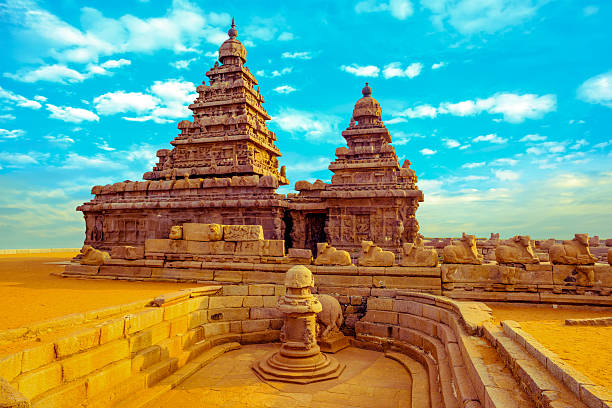
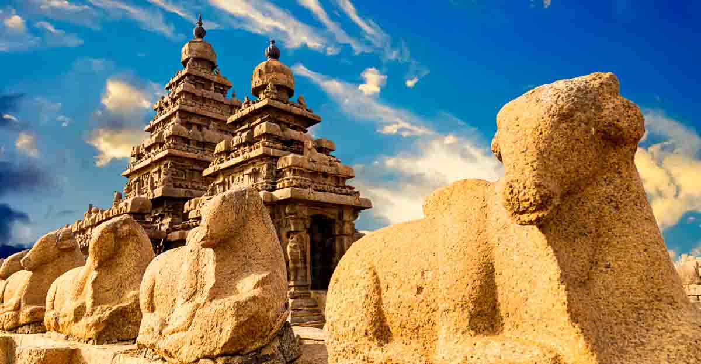
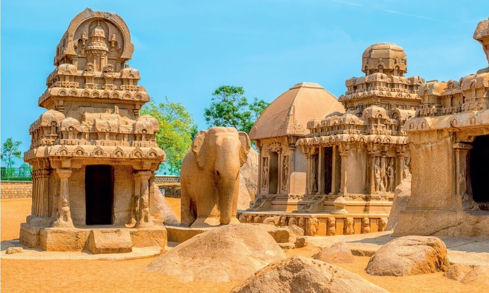
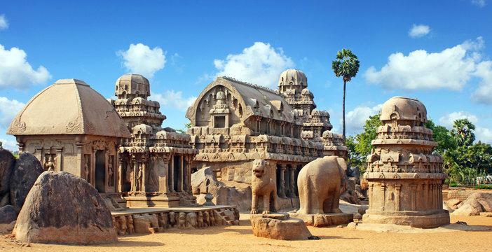

Meenakshi Amman Temple
Meenakshi Amman Temple in Madurai is a masterpiece of Dravidian architecture. Explore the intricate sculptures, vibrant paintings, and the sacred pond within the temple complex.


Meenakshi Amman Temple in Madurai is a masterpiece of Dravidian architecture. Explore the intricate sculptures, vibrant paintings, and the sacred pond within the temple complex.
Mahabalipuram, also known as Mamallapuram, is a UNESCO World Heritage site known for its ancient rock-cut temples and sculptures. Discover the Shore Temple, Arjuna's Penance, and other architectural wonders.
   Thanjavur Brihadeeswarar Temple, a marvel of Chola architecture, is dedicated to Lord Shiva. Admire the towering vimana, intricate carvings, and the Nandi statue at this historical site.